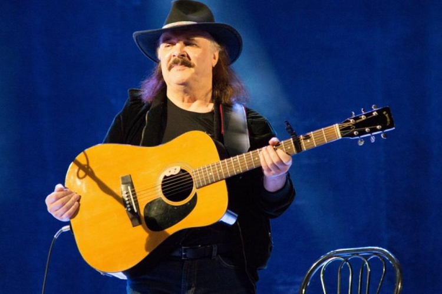
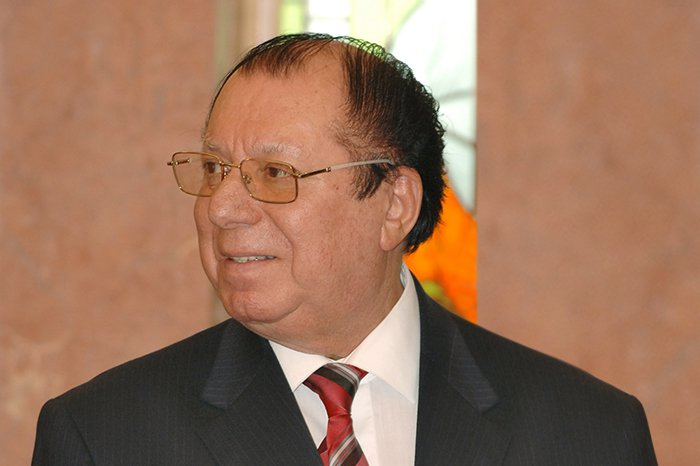
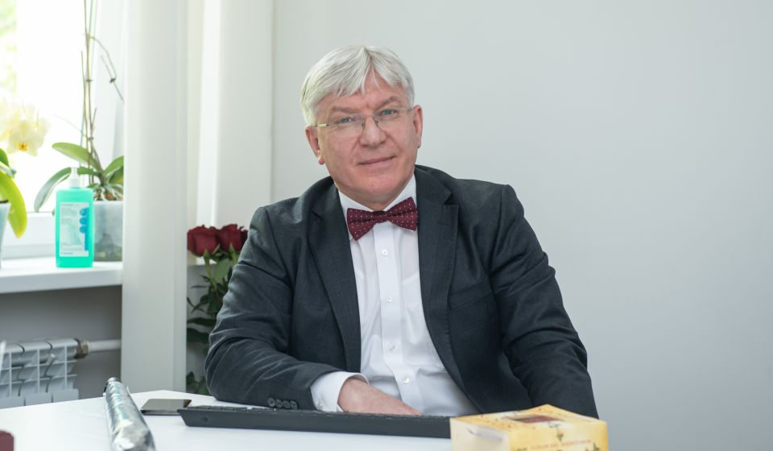
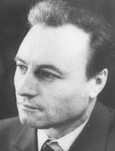

Personalități marcante
Iurie Sadovnic
Iurie Sadovnic s-a născut la 14 decembrie 1951, Jura, raionul Râbnița, RSSM și a decedat la 7 iunie 2021, Chișinău, Republica Moldova. A fost un muzician și cântăreț de muzică ușoară și folk din Republica Moldova, fost membru PCUS. A fost bine-cunoscut pentru stilul său de interpretare în care pune accentul pe chitară. A fost distins cu titlul de Artist emerit al RSSM (1984), medalia „Meritul Civic” (1993), medalia „Mihai Eminescu” (2000), titlul de Artist al Poporului al Republicii Moldova (2011) și Ordinul Republicii (2015).
Vladimir Curbet
Vladimir Curbet (1930-2017) prim-maestru de balet şi conducător artistic al Ansamblului de dansuri populare „Joc”. Datorită domniei sale dansul popular a devenit o carte de vizită a Republicii Moldova în străinătate.La momentul actual Casa de Cultură din satul Susleni îi poartă numele.
Mihail Gavriliuc
Profesor la Universitatea de Stat de Medicină şi Farmacie „Nicolae Testemiţeanu” A fost director medical și știință la Institutul de Neurologie și Neurochirurgie. A fost Medic la Spitalul Clinic Republican.A studiat Medicină Generală la Universitatea de Medicina si Farmacie "N. Testemitanu" A învăţat la Universitatea de Medicina si Farmacie "N. Testemitanu"
Mihail Garaz
s-a născut la 13 noiembrie 1930 în satul Susleni, județul Orhei, Regatul României. A absolvit Institutul Pedagogic din Tiraspol, facultatea de științe naturale (1957). A lucrat ca învățător de biologie la școala din satul natal, apoi a trecut cu traiul la Chișinău. A fost redactor la Televiziunea de Stat a Moldovei, a ținut lecții în fața studenților la Universitatea Pedagogică „Ion Creangă”.